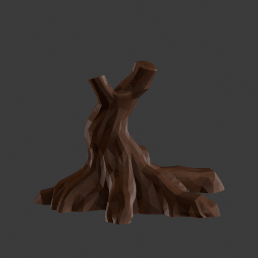
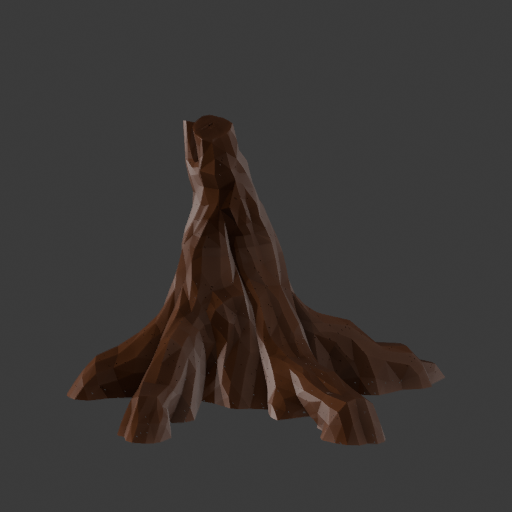
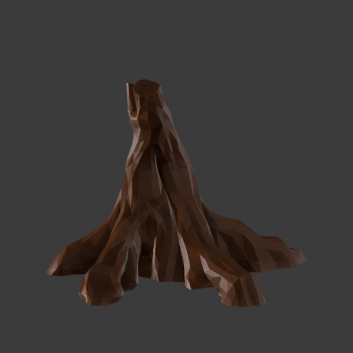

Earlier raw / reduction comparison · Rootbound dossier
Broader foreground roots
Actual Blender inspection renders. No texture, runtime export or gameplay admission.
The separately planned repair widens two existing camera-facing roots and adds a restrained trunk bend. It preserves all 1,029,792 triangles, their indices, height and ground contact. Maximum movement is 14.3 cm; the trunk's maximum offset is 6.5 cm. These are measured edits, not proof of target likeness.
Independent review: 6.6/10, HOLD for art/runtime. Retain the small visible foreground-root improvement. The model still has five measured low root lobes and an unchanged upper fork; the next attempt needs structural reconstruction, not another smooth displacement or material-polish pass.
 Generated design reference, not implementation evidence.
Generated design reference, not implementation evidence.
Front
Raw master — same camera, clay and mesh count
Structural R2 — same camera, clay and mesh count
Three-quarter
Raw master — same camera, clay and mesh countStructural R2 — same camera, clay and mesh count
Side

Raw master — same camera, clay and mesh count
Structural R2 — same camera, clay and mesh countRear
Raw master — same camera, clay and mesh countStructural R2 — same camera, clay and mesh count
Preserved evidence
Editable high-detail R2 · Actual execution receipt · Independent visual review · Plan and builder review
The saved derivative is 24,756,512 bytes. Its actual float32 geometry passed indexed triangle degeneracy and normal-change checks; global intersections, manifoldness and mobile runtime cost are not certified. No simplification was applied to this master. The earlier reduced derivative remains available separately.
The frozen numeric recipe uses a 0.30 m full-weight trunk core plus 0.12 m fade, ending at 0.42 m. The copied plan's old 0.42 m full-core prose is a documented transcription error; it did not control execution. The source plan now corrects that description.